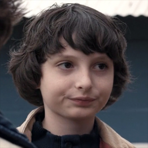
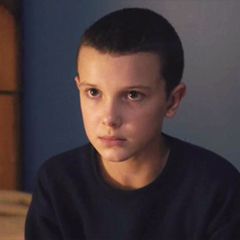

A SÉRIE
Stranger Things
Stranger Things é uma websérie americana de suspense, ficcão científica e drama criada pelos irmãos Matt e Ross Duffer e distribuída pela Netflix. A série se passa no ano de 1983 e é altamente tematizada pelos elementos culturais da década, com uma trilha sonora remetente aos marcantes sintetizadores da época e inúmeras referências a obras de Steven Spielberg, John Carpenter e Stephen King, considerados as grandes inspirações dos irmãos Duffer para a realização do projeto. Na trama, um garoto desaparece misteriosamente na pequena cidade de Hawkins, Indiana, e faz seus amigos partirem por sua busca, que no caminho encontram uma estranha menina com poderes telecinéticos. A primeira temporada foi disponibilizada no dia 15 de julho de 2016 e possui oito episódios com cerca de uma hora cada, sob o roteiro e direção dos gêmeos Matt e Ross Duffer e produção de Shawn Levy. Ela recebeu críticas muito positivas pela sua caracterização, ritmo, atmosfera, atuação, trilha sonora, direção, roteiro e as homenagens a filmes do gênero dos anos 1980. Stranger Things originalmente chamaria-se Montauk e decorreria na cidade de mesmo nome do estado de Nova Iorque, no entanto, acabou por ser inteiramente filmada em Jackson, Geórgia. Em 31 de agosto de 2016, a Netflix confirmou oficialmente a segunda temporada de Stranger Things, que será disponibilizada em 2017 e contara com 9 episódios.
Soundtrack Stranger Things
CONHEÇA OS PERSONAGENS
Joyce Byers (Winona Ryder)
Jim Hopper (David Harbour)
Dr. Martin Brenner (Matthew Modine)
Mike Wheeler (Finn Wolfhard)
Eleven (Millie Bobby Brown)
Dustin Henderson (Gaten Matarazzo)
Lucas Sinclair (Caleb McLaughlin)
Jonathan Byers (Charlie Heaton)

Nancy Wheeler (Natalia Dyer)
Will Byers (Noah Schnapp)
Steve Harrington (Joe Keery)
Karen Wheeler (Cara Buono)
Barbara Holland (Shannon Purser)

Sr. Scott Clarke (Randall P. Havens)

TEORIAS
ATENÇÃO: CONTÉM SPOILERS
Eleven é o Demogorgon?
Demogorgon é a mãe de Eleven?
A Onze ajudou o grupo escapar do Mundo Invertido?
Universos Paralelos?
Will vai se transformar em um monstro?
Viagem no tempo?
O Hopper está trabalhando para o governo?
Barb está viva?
Outro portal será aberto?